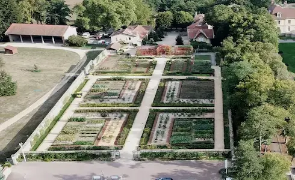

Découvrez nos projets paysagers
Potager urbain sur un toit à Lyon
Aménagement paysager écologique en ville
Ce jardin urbain aménagé sur un toit en plein cœur de Lyon allie écologie et innovation. Avec ses bacs surélevés remplis de légumes, d’herbes aromatiques et de plantes grimpantes, il optimise l’espace en milieu urbain. Ce type d’aménagement favorise l’autosuffisance alimentaire, améliore la qualité de l’air et contribue à la biodiversité en ville.
Ce parc urbain intègre un espace vert aménagé de manière écologique, favorisant la biodiversité et le bien-être des habitants. Grâce à la plantation d’arbres et d’arbustes indigènes, cet espace offre un îlot de fraîcheur en pleine ville et contribue à la préservation des écosystèmes locaux.

Ferme urbaine sur toit en pleine ville
Toit-potager en pleine ville
Ce potager urbain exploite les toits des immeubles pour cultiver des légumes et des plantes aromatiques en pleine ville. Grâce à un système de culture hors-sol et une gestion optimisée de l’eau, cet espace vert contribue à l’autonomie alimentaire locale tout en améliorant la qualité de l’air.
Ce toit végétalisé a été transformé en potager urbain productif, permettant de cultiver une grande variété de légumes et de plantes aromatiques. Grâce à une gestion intelligente des ressources, cet espace favorise une agriculture durable et locale, tout en aidant à réduire les îlots de chaleur urbains.


Jardin écologique à la française
Jardin potager en permaculture dans un domaine historique
Ce magnifique jardin allie esthétique et biodiversité, avec un aménagement structuré en haies naturelles et une grande diversité de plantes comestibles et ornementales. Les allées en gravier et les arches fleuries apportent une touche d’élégance tout en favorisant un écosystème durable.
Ce vaste jardin structuré s’inspire des potagers à la française, alliant organisation géométrique et diversité des cultures. Il intègre des techniques de permaculture pour optimiser la production tout en respectant l’environnement. Situé au cœur d’un domaine historique, il offre un espace de culture esthétique, productif et écologique.